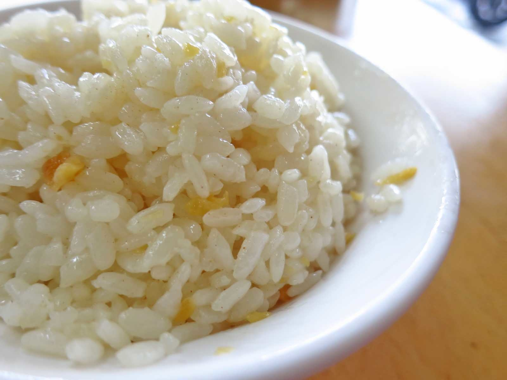
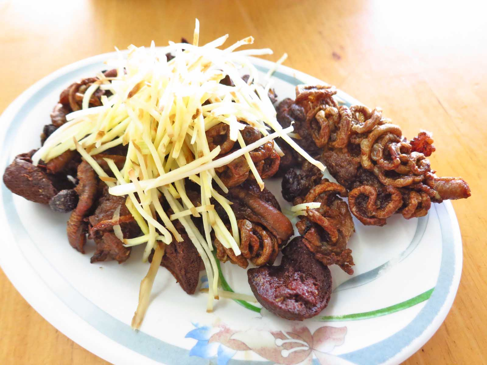
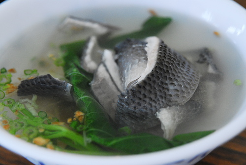

如果不排斥蒜的味道，不妨可以試試，因為它的味道不但不會過於刺激，反而非常的香
我們都認為魚的內臟是苦的，但是在這裡吃到的不但不會有苦的感覺，反而還帶點甘甜，值得一試
如果不考慮價錢的話，個人認為此家的魚皮湯也值得試試，通常大部分的湯喝完都會有口渴的感覺，不過這裡的湯並不會有這種感覺，反而還會有不腥的鮮味，最重要的還是他的魚皮沒有裹漿，薄薄的魚肉細嫩，皮肉間也沒有土腥味，值得試試
說實在的，第一次吃還真的不太敢吃，它的口感非常的綿密，吃起來真的有一種在吃腦的奇妙感覺，不過如果撇掉這些感覺，其實個人覺得這個是非常值得嘗試的